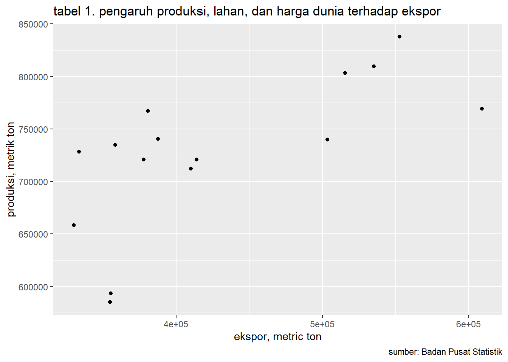

library(tidyverse)
library(readxl)
library(WDI) # tambahkan library lain jika diperlukanAnalisis Pengaruh Produksi, Luas Lahan, dan Harga Kakao Dunia Terhadap Tingkat Ekspor Kakao Indonesia Tahun 2006-2020
Metode Penelitian Politeknik APP Jakarta
1 Pendahuluan
1.1 Latar belakang
Di era globalisasi saat ini, perdagangan internasional merupakan suatu aspek yang sangat penting yang bisa meningkatkan perekonomian suatu negara. Saat ini, hampir semua negara melakukan perdagangan internasional dengan ekspor maupun impor. Ekspor adalah perdagangan dengan cara mengeluarkan barang dari daerah Pabean (Sutedi, 2014:12). Indonesia merupakan salah satu negara yang melakukan ekspor. Dengan berbagai sumber daya alam yang dimiliki, Indonesia sudah banyak mengekspor komoditas alamnya ke berbagai negara. Salah satunya komoditas perkebunan Indonesia yaitu kakao. Kakao merupakan salah satu komoditas di sektor perkebunan Indonesia yang menjadi andalan ekspor Indonesia. Indonesia merupakan salah satu negara pengekspor kakao terbesar di dunia.
Berdasarkan data dari Buku Statistik Indonesia 2016, ekspor kakao Indonesia pada tahun 2020 mencapai 377.849 ribu ton. Jumlah tersebut mengalami peningkatan dari tahun sebelumnya namun mengalami penurunan jika dibandingkan dengan ekspor di tahun 2006-2010. Penurunan ekspor setelah tahun 2010 tersebut diakibatkan karena jumlah produksi kakao nasional yang juga mengalami penurunan. Namun pada tahun 2018 produksi kakao dapat kembali meningkat dari 585.246 ribu ton di tahun 2015 menjadi 767.280 ribu ton di tahun 2018. Produksi merupakan salah satu faktor penting yang berhubungan dengan jumlah ekspor. Secara teori, Jika produksi mengalami peningkatan maka ekspor juga akan meningkat (Komalasari, 2009 dalam Mejaya 2016).
Jumlah produksi kakao berkaitan dengan luas lahan perkebunan kakao. Jika lahan perkebunan luas maka produksi juga akan meningkat. Namun, berdasarkan data yang diperoleh dari Direktorat Jenderal Pertanian dan Badan Pusat Statistik, produksi kakao Indonesia pada tahun 2017 hanya sekitar 658.399 ribu ton dengan luas lahan 1.720.773 Ha. Angka produksi tersebut lebih kecil dibandingkan dengan tahun sebelumnya dengan luas lahan yang lebih kecil. Selain luas lahan dan produksi, harga dunia juga merupakan salah satu variable yang berpengaruh terhadap jumlah ekspor.
Jika suatu harga suatu barang meningkat maka negara yang berperan sebagai produsen juga akan meningkatkan ekspornya agar memperoleh untung yang lebih banyak (Ghozy et al., 2017). Dari data yang diperoleh dari ICCO, harga kakao dunia pada tahun 2006-2020 mengalami fluktuasi. Pada tahun 2020 harga kakao dunia mencapai US$ 2.369,85 per ton dengan jumlah eskpor sebesar 377.849 ribu ton. Jumlah tersebut meningkat jika dibandingkan dengan tahun 2019 dengan harga yang lebih rendah. Hal ini menunjukkan bahwa harga kakao dunia dapat mempengaruhi jumlah ekspor kakao Indonesia.
Dari latar belakang yang sudah dijelaskan diatas, dapat diketahui bahwa tingkat ekspor Kakao Indonesia pada tahun 2006-2020 bersifat fluktuatif. Hal tersebut dikarenakan ada beberapa faktor yang mempengaruhinya. Faktor-faktor tersebut diantaranya ada produksi, luas lahan, dan harga kakao dunia. Dengan mengetahui faktor-faktor yang dapat mempengaruhi ekspor kakao, para pelaku eksor kakao Indonesia dapat memprediksi dan meningkatkan eskpor kakaonya. Oleh karena itu, Penilitian ini bertujuan untuk menganalisis pengaruh serta hubungan dari produksi, luas lahan, dan harga kakao dunia pada tahun 2006-2020 terhadap tingkat eskpor kakao Indonesia tahun 2006-2020.
1.2 Ruang lingkup
Berdasarkan dari latar belakang permasalahan yang sudah dibahas maka penulisan ini akan dibuat pembatasan masalah agar penilitian lebih berfokus kepada hal-hal yang menjadi pembahasan utama saja. Batasan masalah dalam penelitian ini yaitu mengenai faktor-faktor yang dapt mempengaruhi ekspor kakao Indonesia tahun 2006-2020, informasi mengenai perkembangan ekspor kakao Indonesia tahun 2006-2020, Tingkat produksi kakao Indonesia tahun 2006-2020, luas lahan perkebunan kakao Indonesia 2006-2020, harga kakao dunia tahun 2006-2020, dan bagaimana faktor-faktor tersebut dapat mempengaruhi ekspor kakao Indonesia.
1.3 Rumusan masalah
Berdasarkan latar belakang masalah yang telah dijelaskan di atas maka rumusan masalah yang terdapat dalam penilitian ini diantaranya yaitu: 1. Bagaimana tingkat perkembangan ekspor kakao Indonesia, tingkat produksi kakao Indonesia, luas lahan perkebunan kakao Indonesia, dan harga kakao dunia dalam periode tahun 2006-2020? 2. Apakah tingkat produksi kakao Indonesia, luas lahan perkebunan kakao Indonesia, dan harga kakao dunia dalam periode tahun 2006-2020 dapat mempengaruhi tingkat ekspor kakao Indonesia?
1.4 Tujuan dan manfaat penelitian
Pada penilitian ini terdapat beberapa tujuan yang akan dicapai, diantaranya yaitu: 1. Untuk mengetahui tingkat perkembangan ekspor kakao Indonesia, tingkat produksi kakao Indonesia, luas lahan perkebunan kakao Indonesia, harga kakao dunia dalam periode tahun 2006-2020. 2. Untuk mengetahui apakah tingkat produksi kakao Indonesia, luas lahan perkebunan kakao Indonesia, luas lahan perkebunan kakao Indonesia, dan harga kakao dunia dalam periode 2006-2020 dapat mempengaruhi tingkat eskpor kakao Indonesia.
1.5 Package
Package yang digunakan dalam metode analisis penelitian ini yaitu sebagau berikut:
2 Studi pustaka
2.1 Ekspor Menurut Amir (2004) Ekspor adalah upaya melakukan penjualan komoditas yang kita miliki kepada bangsa lain atau negara asing, dengan mengharapkan pembayaran dalam valuta asing, serta melakukan komoditi dengan memakai bahasa asing. Sedangkan berdasarkan Undang-Undang Nomor 2 Tahun 2009 tentang Lembaga Pembiayaan Ekspor Indonesia dijelaskan bahwa ekpor adalah kegiatan mengeluarkan barang dari daerah pabean Indonesia dan/atau jasa dari Wilayah Republik Indonesia. Setiap negara memiliki suatu kelebihan contohnya memiliki sumber daya alam melimpah yang dapat menghasilkan banyak komoditas.
Komoditas yang dihasilkan suatu negara mungkin juga belum dapat dipakai langsung karena berupa bahan mentah yang memerlukan pengolahan terlebih dahulu dan oleh karena itu, dengan adanya eskpor maka suatu negara dapat mengekspor ke negara yang membutuhkannya sebagai bahan baku (Widjaja & Yani, 2000:1). Tujuan dari kegiatan ekspor yaitu dengan kegitan ekspor suatu negara dapat membuka pasar baru di luar negeri sebagai perluasan pasar domestik dan bagi perusahaan dalam negeri dapat meningkatkan laba perusahaan melalui perluasan pasar serta memperoleh harga jual yang lebih baik (Sutedi, 2014:15).
2.2 Produksi Menurut Drs. Mohammad Hatta (1994), Produksi merupakan seluruh pekerjaan yang menimbulkan guna, memperbesar guna yang ada dan membagikan guna itu di antara orang banyak. Sedangkan menurut Sukanto Rekso Hadiprodjo, M. Com., Ph.D. dan Drs. Indriyo Gito Sudarmo (1993), Produksi merupakan penciptaan atau penambah faedah bentuk, waktu dan tempat atas faktor-faktor produksi sehingga lebih bermanfaat bagi pemenuhan kebutuhan manusia. Komalasari (dalam Mejaya et al., 2016) menyatakan bahwa produksi memiliki hubungan terhadap ekspor yaitu jika produksi meningkat maka volume ekspor juga akan meningkat, dan sebaliknya.
2.3 Luas Lahan Lahan adalah salah satu faktor produksi, tempat dihasilkannya produk pertanian dan banyak sedikitnya hasil produksi sangat dipengaruhi oleh luas sempitnya lahan yang digunakan (Mubyarto, 1989 dalam Hakiki 2019). Dengan banyaknya luas lahan maka produksi akan meningkat. Dengan begitu, lahan juga merupakan salah satu faktor yang dapat mempengaruhi volume ekspor. Semakin luas lahan maka semakin banyak juga kakao yang dapat diproduksi, sehingga dapat meningkatkan volume eskpor kakao (Segarani, 2015).
2.4 Harga Harga merupakan suatu hal yang sangat penting dalam kegiatan bisnis, karena suatu barang yang akan dijual harus ditentukan harganya terlebih dahulu sehingga seluruh pihak dapat memperoleh keuntungan dan mendapatkan hasil yang memuaskan dengan penetapan harga yang telah disetujui (Puspita et al., 2015). Harga adalah sejumlah uang yang dibebankan untuk suatu produk atau jasa dari nilai tukar konsumen atas manfaat yang didapatkan dari penggunaan produk atau jasa tersebut (Kotler dan Armstrong, 2010).
2.5 Kerangka Penelitian Kerangka penelitian dari penulisan ini tertera sebagai berikut:

3 Metode penelitian
3.1 Data Penelitian Penelitian ini menggunakan sumber data sekunder berdasarkan deret wakut (time series), tahun 2006-2020. Data yang digunakan bersal dari berbagai sumber diantara yaitu, data dari Badan Pusat Statistik (BPS), dan data dari International Cocoa Organization (ICCO). Analisis penelitian ini juga dilakukan dengan menggunakan data deskriptif yang berasal dari Buku Statistik Kakao Indonesia tahun 2016 dan 2020, dan website resmi Direktorat Jenderal Pertanian.
3.2 Metode Analisis Penelitian ini menganalsis pengaruh dari produksi, luas lahan, dan harga kakao dunia terhadapa tingkat eskpor kakao Indonesia tahun 2006-2020 dengan menggunakan Metode analisis deskriptif. Metode deskriptif adalah metode dengan cara menganalisis data yang berasal dari sumber buku dan jurnal. Penelitian ini juga Menggunakan R sebagai alat bantu pengolahan data. Package apa saja yang digunakan, tuliskan model yang akan digunakan.
penelitian ini menggunakan data multivariat.
dat<-read_excel('exkakao.xlsx')
ggplot(data=dat,aes(x=ekspor,y=produksi)) +
geom_point() + # setiap nambah command, selalu kasih tanda +
labs(title="tabel 1. pengaruh produksi, lahan, dan harga dunia terhadap ekspor",
x="ekspor, metric ton",
y="produksi, metrik ton",
caption = "sumber: Badan Pusat Statistik") # yang terakhir ga perlu +
3.1 Metode analisis
Metode yang dipilih adalah regresi multivariat dengan 3 variabel independen dengan 1 variabel dependen. Penelitian ini bermaksud untuk mencari pengaruh produksi, luas lahan, dan harga kakao terhadap tingkat ekspor kakao Indonesia. Penelitian ini digunakan dengan rumus:
\[ y_{t}=\beta_0 + \beta_1 x_t+\mu_t \] di mana \(y_t\) adalah tingkat ekspor dan \(x_t\) adalah produksi, luas lahan, dan harga kakao.
4 Pembahasan
4.1 Pembahasan masalah
Kakao merupakan salah satu komoditi perkebunan yang dapat diolah menjadi cokelat. Kakao adalah komoditas yang cukup penting dalan kegiatan perekonomian Indonesia karena kakao merupakan komoditas ekspor Indoneisa yang menjadi penghasil devisa negara terbesar selain minyak dan gas. Indonesia merupakan salah satu negara produsen dan eskportir kakao terbesar ketiga di dunia (Statistik Kakao Indonesia, 2020).
| Tahun | ekspor (ton) |
|---|---|
| 2006 | 609.035 |
| 2007 | 503.522 |
| 2008 | 515.523 |
| 2009 | 535.236 |
| 2010 | 552.880 |
| 2011 | 410.257 |
| 2012 | 387.790 |
| 2013 | 414.092 |
| 2014 | 333.679 |
| 2015 | 355.321 |
| 2016 | 330.029 |
| 2017 | 354.880 |
| 2018 | 380.827 |
| 2019 | 358.481 |
| 2020 | 377.849 |
sumber: Buku Statistik Indonesia 2016
Berdasarkan data yang diperoleh dari Buku Statistik Indonesia 2016, Volume ekspor kakao Indonesia pada tahun 2006 sampai 2020 mengalami kondisi fluktuatif. Pada tahun 2006, volume ekspor kakao Indonesia sebesar 609.035 ribu ton dan jumlah tersebut merupakan jumlah volume ekspor kakao Indonesia terbesar selama periode 15 tahun. Di tahun 2007, ekspor turun menjadi sebesar 503.522 ribu ton turun menjadi 358.481 ribu ton dan ditahun-tahun selanjutnya volume ekspor kakao Indonesia mulai mengalami penurunan. Sampai di tahun 2020 eskpor kakao Indonesia hanya sekitar 377.849 ribu ton.
Banyaknya volume ekspor kakao Indonesia dipengaruhi oleh beberapa faktor salah satunya yaitu faktor produksi. Jika produksi di dalam negeri mengalami peningkatan, maka jumlah yang dapat di ekspor juga akan meningkat. Dewan Kakao Indonesia (Dekaindo) mengatakan bahwa Indonesia merupakan salah satu negara produsen kakao terbesar di dunia setelah Pantai Gading dan Ghana. Produksi kakao Indonesia selama periode 15 tahun bersifat fluktuatif. Hal tersebut juga dikarenakan oleh luas lahan perkebunan kakao Indonesia yang juga fluktuatif selama 15 tahun tersebut.
| Tahun | Luas Lahan | Produksi |
|---|---|---|
| 2006 | 1.219.633 | 769.386 |
| 2007 | 1.272.781 | 740.006 |
| 2008 | 1.326.784 | 803.594 |
| 2009 | 1.491.808 | 809.583 |
| 2010 | 1.558.153 | 837.918 |
| 2011 | 1.638.329 | 712.231 |
| 2012 | 1.639.337 | 740.513 |
| 2013 | 1.660.767 | 720.862 |
| 2014 | 1.686.178 | 728.414 |
| 2015 | 1.667.337 | 593.331 |
| 2016 | 1.720.773 | 658.399 |
| 2017 | 1.653.116 | 585.246 |
| 2018 | 1.611.014 | 767.280 |
| 2019 | 1.560.945 | 734.795 |
| 2020 | 1.508.956 | 720.660 |
Sumber: Direktorat Jenderal Pertanian, Badan Pusat Statistik
Berdasarkan data yang diambil dari Direktorat Jenderal Pertanian dan Badan Pusat Statistik pada tahun 2006-2011 Luas lahan perkebunan kakao Indonesia mengalami peninglatan yaitu pada tahun 2006 seluas 1.219.633 Ha dan pada tahun 2011 meningkat menjadi seluas 1.638.329 Ha.
Di tahun-tahun selanjutnya luas lahan kakao Indonesia mulai mengalami peningkatan dan juga penurunan. Luas lahan merupakan salah satu faktor pentimg bagi ekspor di sektor perkebunan, karena dengan semakin luasnya lahan perkebunan maka akan semakin besar pula produksinya. Namun, produksi kakao Indonesia tidak terlalu mengikuti peningkatan luas lahan.
Di tahun 2016, Luas lahan kakao mencapai 1.720.773 Ha tetapi produksi di tahun tersebut hanya sebesar 658.399 ton. Berbeda dengan tahun 2010 yang produksinya mencapai 837.918 ton dengan luas lahan 1.558.153 Ha. Hal tersebut dikarenakan tidak semua lahan perkebunan kakao di Indonesia produktif dan dalam beberpa tahunterakhir banyak perkebunan kakao di Indonesia yang telah beralih menjadi perkebunan Kelapa Sawit, Jagung, Padi dan lain-lain (Wijaya, 2020).
| Tahun | Harga Kakao Dunia(usd) |
|---|---|
| 2006 | 1.581,14 |
| 2007 | 1.907,34 |
| 2008 | 2.613,70 |
| 2009 | 2.990,91 |
| 2010 | 3.132,98 |
| 2011 | 2.980,04 |
| 2012 | 2.391,86 |
| 2013 | 2.496,21 |
| 2014 | 3.144,86 |
| 2015 | 3.136,98 |
| 2016 | 2.892,16 |
| 2017 | 2.029,05 |
| 2018 | 2.293,79 |
| 2019 | 2.340,73 |
| 2020 | 2.369,85 |
Sumber: Market Insider, ICCO
Banyaknya volume yang dapat diekspor juga didukung oleh tingkat harga. Jika harga suatu barang naik maka produsen akan meningkatkan penawarannya untuk barang tersebut. Namun, hal tersebut berbanding terbalik dengan konsumen. Jika harga barang mengalami peningkatan maka permintaan akan barang akan mengalami penurunan sehingga harga akan kembali ke titil keseimbangan (Ghozy et al., 2017). Berdasarkan data pada tabel 4.3, harga kakao dunia dari tahun 2006-2020 selalu mengalami penurunan dan peningkatan. Harga kakao dunia di tahun 2006 dan 2007 masih sekitar US$1000 per ton, namun di tahun selanjutnya naik menjadi US$2000 per ton.
Di tahun 2014 harga kakao naik menjadi US$ 3000 per ton, namun di tahun selanjutnya turun kembali. Pada tahun 2020 harga kakao dunia menjadi US$ 2.369,85 per ton dan jumlah ekspor kakao pada tahun tersebut juga ikut meningkat dibandingkan dengan tahun lalu. Jika dilihat dari tabel tersebut, naik dan turunnya harga kakao dunia dapat mempengaruhi ekspor yaitu ketika harga kakao dunia sedang meningkat maka negara pengekspor juga akan meningkatkan ekspornya.
4.2 Analisis masalah
Hasil regresinya adalah
reg1<-lm(ekspor~produksi+lahan+harga,data=dat)
summary(reg1)
Call:
lm(formula = ekspor ~ produksi + lahan + harga, data = dat)
Residuals:
Min 1Q Median 3Q Max
-59432 -33181 -163 38261 67340
Coefficients:
Estimate Std. Error t value Pr(>|t|)
(Intercept) 7.272e+05 2.854e+05 2.548 0.02709 *
produksi 3.931e-01 2.323e-01 1.693 0.11864
lahan -4.322e-01 1.304e-01 -3.314 0.00691 **
harga 3.267e+01 3.639e+01 0.898 0.38860
---
Signif. codes: 0 '***' 0.001 '**' 0.01 '*' 0.05 '.' 0.1 ' ' 1
Residual standard error: 48390 on 11 degrees of freedom
Multiple R-squared: 0.7742, Adjusted R-squared: 0.7126
F-statistic: 12.57 on 3 and 11 DF, p-value: 0.00070865 Kesimpulan
Dari penelitian tersebut, terdapat kekurangan yang terdapat pada data yang digunakan untuk analisis. Kekurangan yaitu data yang berasal dari Badan Pusat Statistik dan Market Insider harus diolah secara manual. Hal tersebut membuat pengolahan data menjadi lebih lama dan sulit.
Berdasarkan dari hasil analisis, maka dapat diketahui bahwa pengaruh dari produksi, luas lahan, dan harga kakao terhadap tingkat ekspor Indonesia yaitu sebagai berikut: 1. 1 ton produksi dapat menambah tingkat eskpor kakao Indonesia sebesar 393,1 ton. Hal tersebut berarti jumlah produksi kakao berpengaruh signifikan terhadap tingkat ekspor kakao Indonesia tahun 2006-2020. 2. setiap 1 Ha luas lahan perkebunan kakao dapat mengurangi 432,2 Ha tingkat ekspor kakao Indonesia. Hal tersebut berarti luas lahan tidak terlalu berpengaruh secara signifikan terhadap tingkat ekspor kakao Indonesia tahun 2006-2020. 3. Setiap 1 USD dari harga dunia kakao dapat menambah tingkat eskpor kakao Indonesia sebesar 32.670 USD. Hal tersebut berarti harga kakao dunia berpengaruh signifikan terhadap tingkat ekspor kakao Indonesia tahun 2006-2020.
6 Referensi
Badan Pusat Statistik. (t.t.). Diambil 19 Januari 2023, dari https://www.bps.go.id/publication/2022/11/30/be404f7a76a56887462b5187/statistik-kakao-indonesia-2021.html
Cocoa PRICE Today | Cocoa Spot Price Chart | Live Price of Cocoa per Ounce | Markets Insider. (t.t.). Diambil 19 Januari 2023, dari https://markets.businessinsider.com/commodities/cocoa-price/usd
Ekspor Biji Kakao Anjlok. (t.t.). Diambil 19 Januari 2023, dari https://disbun.kaltimprov.go.id/artikel/ekspor-biji-kakao-anjlok
Mejaya, A. S., Fanani, D., & Mawardi, M. K. (t.t.). PENGARUH PRODUKSI, HARGA INTERNASIONAL, DAN NILAI TUKAR TERHADAP VOLUME EKSPOR.
Puspita, R., Hidayat, K., & Yulianto, E. (t.t.). PENGARUH PRODUKSI KAKAO DOMESTIK, HARGA KAKAO INTERNASIONAL, DAN NILAI TUKAR TERHADAP EKSPOR KAKAO INDONESIA KE AMERIKA SERIKAT.
Segarani, M. S., & Putu Martini Dewi. (2015). Pengaruh Luas Lahan, Jumlah Produksi, dan Kurs Dollar Pada Ekspro Cengkeh di Indonesia. 4(4).
Statistics—International Cocoa Organization. (t.t.). Diambil 19 Januari 2023, dari https://www.icco.org/statistics/